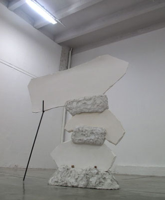

Dear Survivors
Year
2010
Materials
Plaster, white concrete and stainless steel
Dimension
260 x 215 x 65 cm
Description
This work was conceived for the exhibition Dynasty, which took place simultaneously in two institutions that face one another. A large ceramic dish was broken into pieces and these pieces were "distributed" randomly in each institution, then crudely reassembled, sometimes with the addition of ceramic clay.
